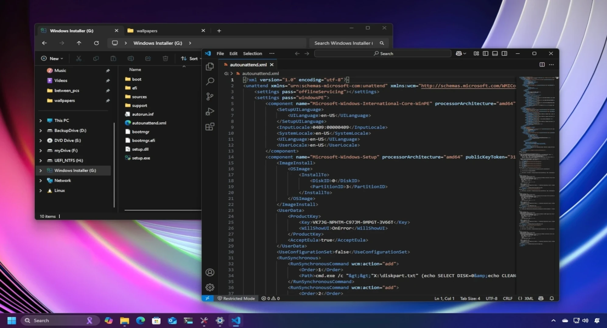
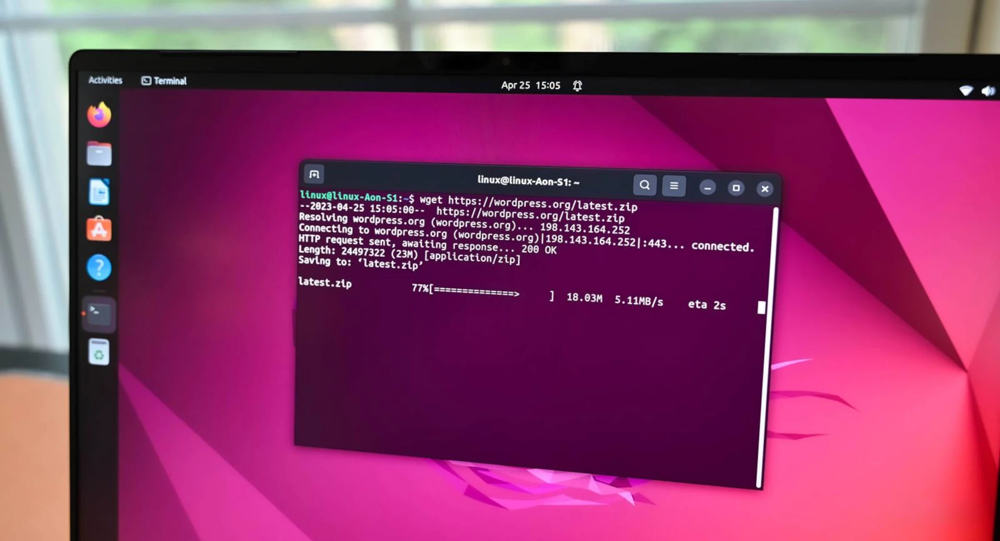

Documentation & Guides
-  Automating Windows Installs with autounattend.xml – Streamline Windows deployments using customized autounattend.xml configurations.
-  Linux Command Line Basics – Essential Linux command line skills for effective system management.